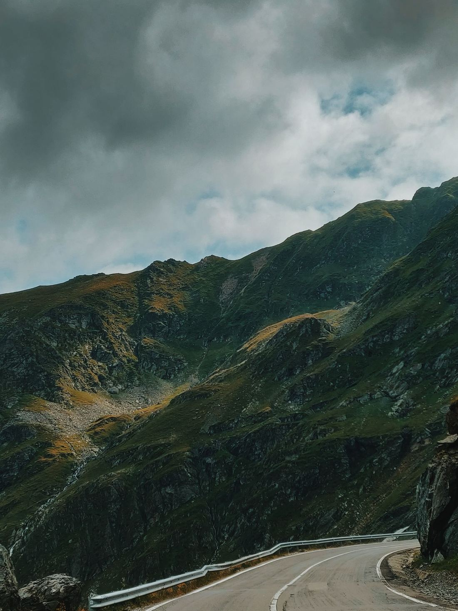

The Donkey, the Harley, and the Road of Fearlessness

People often ask me about faith.
I tell them that what I have is not faith in the traditional sense. Faith often implies belief in something unseen, something accepted because someone else said it was true. My path has been different.
I know only one thing with certainty: LOVE is real.
LOVE is the one constant I have discovered beneath every question, every loss, every joy, every mystery. It is the rock foundation from which I measure all things. It is the Source from which all life emerges and to which all life returns. My trust does not come from doctrines or dogmas. It comes from direct experience.
The Eastern masters spoke of this realization as awakening to one’s true nature. Jesus spoke of the Kingdom within. Mystics throughout history have pointed toward the same truth using different words. The destination is the same: discovering that the Divine is not somewhere else. The Divine is the very essence of what we are.
When I dive deeply into silence, beyond thoughts, beyond fears, beyond the stories of the personality, I discover an ocean of loving awareness. There, I find no separation between myself and God. There is only ONENESS.
From that realization comes reliance.
Reliance is not dependence upon circumstances going my way. It is not wishing for rescue. It is resting completely in the knowing that LOVE is present, even when the road turns dark. Reliance means surrendering the illusion that I control the universe and trusting the intelligence of the Source that created it.
This is where fearlessness begins.
Fear is born from separation. Fear says I am alone. Fear says I can lose what I am. Fear says death can take something essential from me.
LOVE says otherwise.
When I know myself as an expression of the Infinite, what is there to fear?
The body may age. Circumstances may change. Relationships may come and go. Entire worlds may rise and fall. Yet the awareness that witnesses all of this remains untouched. The Eastern sages called this deathlessness—not the immortality of the body, but the realization that our true nature was never born and therefore cannot die.
Deathlessness creates fearlessness.
Fearlessness does not mean recklessness. It does not mean charging into battle without wisdom. It means meeting life exactly as it arrives, without shrinking from it.
Life gives each of us karma to face and lessons to learn. We choose our battles. We choose our responses. We choose whether we meet challenges as victims or as spiritual warriors.
The true warrior does not fight from anger. The true warrior fights from clarity. The true warrior knows that fear serves no one because fear is the opposite movement from LOVE.
LOVE expands. Fear contracts. LOVE unites. Fear separates. LOVE trusts. Fear doubts.
And so, the warrior walks forward with an open heart, regardless of what appears on the horizon.
This brings me to the image of Jesus entering Jerusalem.
Many remember him riding a donkey, symbolizing humility and peace. But imagine for a moment that he arrived on a Harley-Davidson instead.
The vehicle is irrelevant.
The donkey, the Harley, the horse, or simply bare feet upon the earth—all are symbols of the same journey.
The deeper teaching is this: he rode knowingly toward what others feared.
He did not turn away from destiny. He did not retreat from suffering. He did not abandon his connection to the Father. He entered the city with complete reliance upon the Divine.
That is the spiritual path.
Each of us is riding toward our own Jerusalem. Each of us approaches moments that will test our courage, challenge our beliefs, and ask us to remember who we truly are.
The awakening comes when we realize that what awaits us is not punishment but transformation. Every event, every challenge, every triumph, and every loss becomes part of the perfect unfolding of our spiritual evolution.
Then fear begins to dissolve.
We stop asking, “Why is this happening to me?” We begin asking, “How is LOVE expressing itself through this experience?”
We stop resisting life. We start participating in it. We stop fearing death. We start living fully.
And eventually we understand that reliance, faith, fearlessness, and deathlessness are not separate teachings. They are different names for the same realization: I am one with the Source.
LOVE is my foundation. LOVE is my path. LOVE is my destination.
And with that knowing, I ride forward—whether on a donkey, a Harley, or the wings of Spirit itself—fearless, awake, and at peace.
Continue the Journey
Where in your life is fear asking you to contract, and what might change if you met that moment from Love instead?